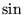

Next:
Paradoxes and Expansions
How do mathematicians extend the world
Solutions to problems without solutions
Paradoxes and Expansions
Origin: Modeling
Expansion by inversion
Creation of fractions
Creation of negative numbers
Creation of complex numbers
Distributions
Expansion through limits
First example: Minimal positive number
Second example: Irrational numbers
``Strange'' limits
Delta-sequence
Distributions and weak limits: The shadow of a function
Limit of an infinitely fast wiggling curve
Hidden length!
Fractals
Sierpinsky gasket and fractals
Hidden energy
Limit of materials' layout
Expansion by re-definition
Example:  of a matrix
More examples
About this document ...
Andre Cherkaev
2001-11-16